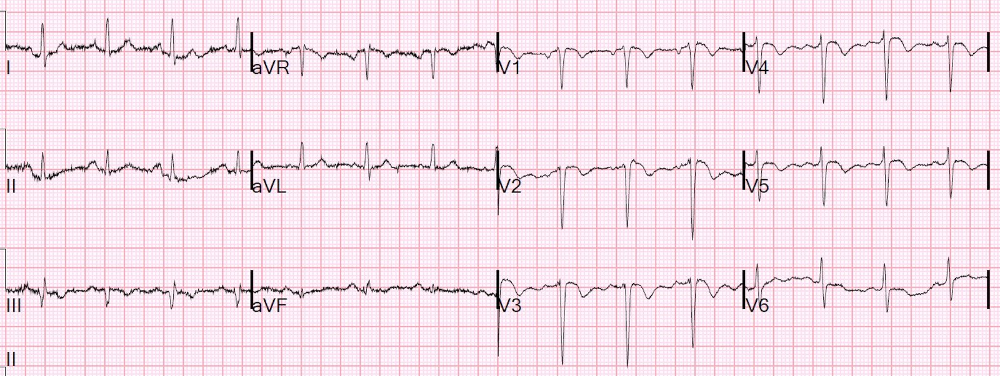
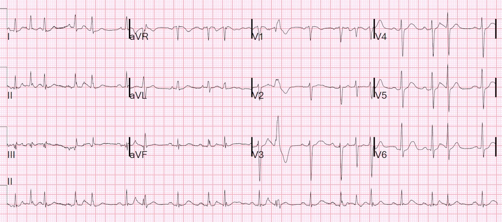
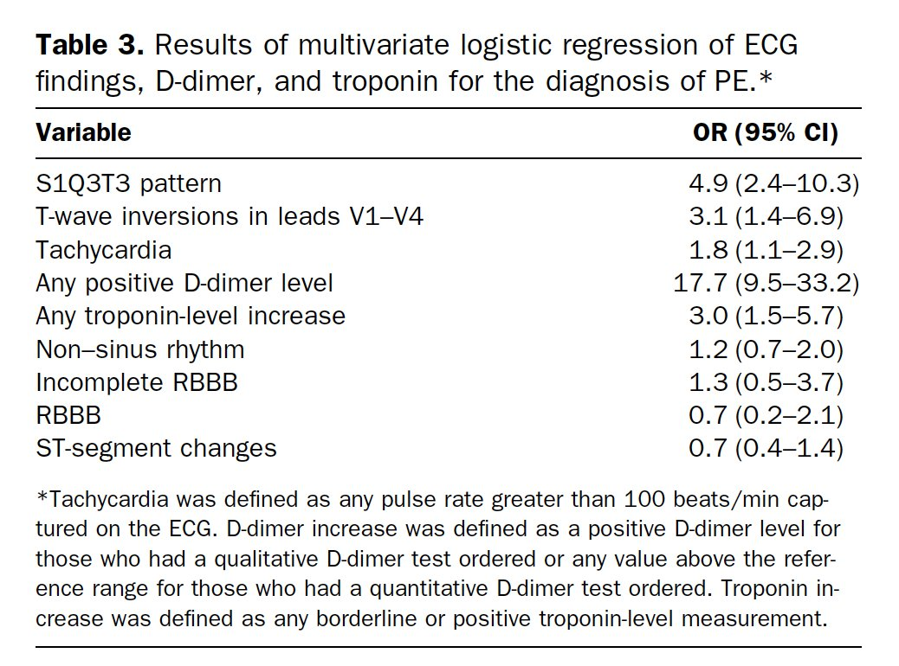
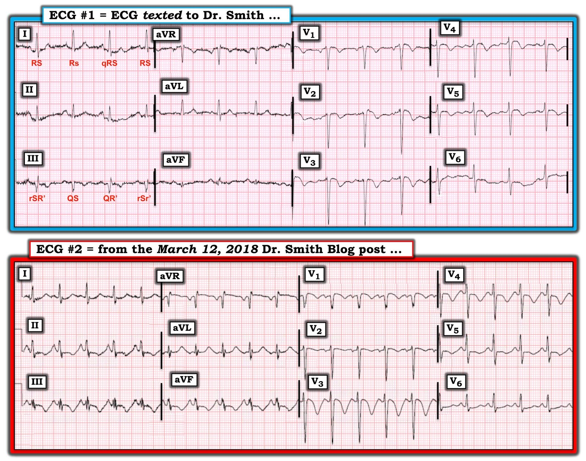

28/02/2020 — Đây có phải là sóng Wellens không?
Bản dịch tiếng Việt của bài "Are these Wellens’ waves?" – Dr. Smith’s ECG Blog. Giữ nguyên toàn bộ 5 hình ảnh của bản gốc.
Một điện tâm đồ được nhắn tin cho tôi (Smith) mà không kèm bất kỳ thông tin lâm sàng nào:


Câu trả lời của tôi:
“Đây là hình ảnh kinh điển của PE, nhưng nó cũng có thể xuất hiện trong bất kỳ tình trạng thiếu oxy nào do co mạch phổi vì thiếu oxy, dẫn đến tăng áp phổi cấp và tăng gánh tim phải cấp. Đây KHÔNG phải Wellens. Bệnh nhân có thiếu oxy không? Có khó thở (SOB) không?”
Câu trả lời là có. Thông tin lâm sàng sau đó được gửi tới: “Bệnh nhân bị đợt cấp COPD với SpO2 trước viện là 60%. Bệnh nhân bị suy hô hấp, đã được đặt nội khí quản, và được chẩn đoán viêm phổi.”
Một số nhân viên y tế đã lo ngại về ACS vì điện tâm đồ này.
Câu trả lời của tôi đã làm giảm mối lo ngại của họ về ACS và không làm thêm thăm dò nào cho ACS nữa.
4 đặc điểm quan trọng chỉ ra tăng gánh tim phải cấp:
1. Nhịp nhanh (hoặc gần nhanh)
2. Dấu hiệu S1Q3T3
3. Tăng tiến sóng R kém (poor R-wave progression)
4. Sóng T đảo ngược dạng vòm
5. Quan trọng nhất: sóng T đảo ngược không chỉ ở các chuyển đạo trước tim, mà còn ở chuyển đạo III.
Xem phần bàn luận sâu hơn ở cuối bài.
Hóa ra có một điện tâm đồ cũ để so sánh, mà mãi nhiều tuần sau tôi mới được xem:


Không có bằng chứng chắc chắn về phì đại thất phải (trục bình thường, không có sóng R lớn ở V1)
Vùng chuyển tiếp muộn, điển hình của COPD (R/S = 1 ở V5)
Không có bằng chứng nhồi máu cơ tim cũ (không có sóng QS ở V1-V3 như thấy trên điện tâm đồ lúc nhập viện)
Các ca tương tự khác về tăng gánh tim phải cấp
Xem ca hen phế quản này, có điện tâm đồ giống PE cấp:
Is it pulmonary embolism? (Có phải thuyên tắc phổi?)
Và một số điện tâm đồ tương tự do thuyên tắc phổi:
A young woman with altered mental status and hypotension (Một phụ nữ trẻ bị rối loạn ý thức và tụt huyết áp)
An elderly woman transferred to you for chest pain, shortness of breath, and positive troponin – does she need the cath lab now? (Một phụ nữ lớn tuổi được chuyển đến bạn vì đau ngực, khó thở và troponin dương tính – bà ấy có cần vào phòng thông tim ngay không?)
A crashing patient with an abnormal ECG that you must recognize (Một bệnh nhân đang diễn tiến xấu nhanh với điện tâm đồ bất thường mà bạn phải nhận ra)
A 30-something with 8 hours of chest pain and an elevated troponin (Một người ba mươi mấy tuổi đau ngực tám giờ và troponin tăng)
Và một hình ảnh giả PE cấp do tăng áp phổi mạn tính và phì đại thất phải:
A 30-something woman with chest pain and h/o pulmonary hypertension due to chronic pulmonary emboli (Một phụ nữ ba mươi mấy tuổi đau ngực, có tiền sử tăng áp phổi do thuyên tắc phổi mạn tính)
Điện tâm đồ trong thuyên tắc phổi:
Điện tâm đồ này là hình ảnh kinh điển của thiếu oxy cấp, bao gồm cả PE cấp, vì vậy dưới đây là một số thông tin về điện tâm đồ trong PE cấp:
Điện tâm đồ không nhạy với PE, nhưng khi có các dấu hiệu như S1Q3T3, hoặc sóng T đảo ngược ở thành trước, hoặc RBBB mới xuất hiện, hoặc nhịp nhanh xoang, thì chúng có tỷ số khả dĩ (+). S1Q3T3, hoặc thậm chí chỉ riêng T3, có thể giúp phân biệt Wellens với PE.
S1Q3T3 là gì? Rất ít nghiên cứu định nghĩa S1Q3T3. Nó đã được mô tả từ tận năm 1935 và cả S1 lẫn Q3 đều được định nghĩa là 1,5 mm (0,15 mV). Trong bài báo của Marchik (giả định rằng họ định nghĩa theo cùng cách, và phần phương pháp không nêu rõ điều này), trong số các bệnh nhân nghi ngờ PE, S1Q3T3 được tìm thấy ở 8,5% bệnh nhân có PE và 3,3% bệnh nhân không có PE.
Khi troponin dương tính, các dấu hiệu này liên quan đến tổn thương cơ tim, và khi đó PE và nhồi máu cơ tim đứng đầu danh sách chẩn đoán phân biệt, và bài báo của Kosuge (xem bên dưới) được áp dụng.
Kosuge và cs. đã chỉ ra rằng, khi sóng T đảo ngược ở các chuyển đạo trước tim, nếu chúng cũng đảo ngược ở chuyển đạo III và V1, thì thuyên tắc phổi có khả năng cao hơn nhiều so với ACS. Trong nghiên cứu này, (trích dẫn) “sóng T âm ở các chuyển đạo III và V1 chỉ được ghi nhận ở 1% bệnh nhân ACS so với 88% bệnh nhân thuyên tắc phổi cấp (APE) (p nhỏ hơn 0,001). Độ nhạy, độ đặc hiệu, giá trị tiên đoán dương và giá trị tiên đoán âm của dấu hiệu này trong chẩn đoán PE lần lượt là 88%, 99%, 97% và 95%. Tóm lại, sự hiện diện của sóng T âm ở cả hai chuyển đạo III và V1 cho phép phân biệt PE với ACS một cách đơn giản nhưng chính xác ở những bệnh nhân có sóng T âm ở các chuyển đạo trước tim.”
Witting và cs. đã khảo sát các bệnh nhân liên tiếp có PE, ACS, hoặc không có bệnh nào. Họ thấy rằng chỉ 11% bệnh nhân PE có sóng T đảo ngược 1 mm ở cả chuyển đạo III và chuyển đạo V1, so với 4,6% ở nhóm chứng.
Điều này không mâu thuẫn với kết luận của Kosuge và cs., những người đã nghiên cứu một quần thể chọn lọc gồm các bệnh nhân đã biết là có hoặc PE hoặc ACS — nghĩa là tất cả đều thực sự bị bệnh. Trong số những bệnh nhân chọn lọc đó, những người đồng thời có sóng T đảo ngược ở các chuyển đạo trước tim bên phải thì được đưa vào nghiên cứu. Trong số này, sóng T đảo ngược ở chuyển đạo III rất đặc hiệu cho PE. Theo kinh nghiệm của tôi, điều này là đúng, nhưng cần được thẩm định trong một nghiên cứu có phương pháp tương tự. Ủng hộ Kosuge, Ferrari thấy rằng sóng T đảo ngược ở thành trước là dấu hiệu điện tâm đồ thường gặp nhất trong PE diện rộng.
Cuối cùng, Stein và cs. thấy điện tâm đồ bình thường ở chỉ 3 trong 50 bệnh nhân PE diện rộng, và 9 trong 40 bệnh nhân PE không phải diện rộng. Tuy nhiên, ngày nay con số đó sẽ thấp hơn vì chúng ta chẩn đoán được nhiều PE nhỏ hơn với triệu chứng tối thiểu.
Đây là một bài báo đáng đọc: Marchik và cs. đã nghiên cứu các dấu hiệu điện tâm đồ của PE ở 6049 bệnh nhân, trong đó 354 người có PE.
Xin nói rõ: đây đều là những bệnh nhân đang được đánh giá PE, trong khi Kosuge nghiên cứu những bệnh nhân mà chẩn đoán phân biệt chỉ còn lại ACS và PE. Chúng ta nên áp dụng dữ liệu của Kosuge cho ca bệnh ở đây vì troponin dương tính.
Họ tìm thấy các tỷ số khả dĩ dương cho PE sau đây:
1. S1Q3T3 = 3,7
2. Sóng T đảo ngược ở V1 và V2, = 1,8
3. Sóng T đảo ngược ở V1-V3, = 2,6
4. Sóng T đảo ngược ở V1-V4, = 3,7
5. Blốc nhánh phải không hoàn toàn (IRBBB) = 1,7
6. Nhịp nhanh, = 1,8.
Cuối cùng, họ tìm thấy các yếu tố tiên đoán độc lập sau đây của PE:


Trong ca bệnh ở đây, có S1Q3T3, sóng T đảo ngược ở các chuyển đạo trước tim kèm đảo ngược ở chuyển đạo III, và nhịp nhanh (tần số 96 có thể được xếp là nhịp nhanh). Gộp tất cả lại, điều đó tạo ra một tỷ số chênh rất cao, nhưng như chúng ta thấy từ ca này, nó không đặc hiệu cho PE, mà đúng hơn là cho tình trạng thiếu oxy cấp.
Sau đây là bình luận của Ken Grauer.
Dù tôi thường đồng ý với Ken, tôi không nhất thiết đồng ý với tất cả những gì anh ấy viết, nhưng góc nhìn của anh ấy luôn thú vị và hữu ích.
Anh ấy cho rằng điện tâm đồ này không phải là hình ảnh kinh điển của tăng gánh tim phải cấp. Tôi thì cho là có, và những lập luận của anh ấy dưới đây không làm tôi đổi ý.
Khi tôi viết rằng điện tâm đồ là “kinh điển” của PE thì điều đó có nghĩa là gì?
Nó có nghĩa là nếu bạn thấy hình ảnh này, tốt hơn hết bạn nên nghĩ tới và tìm kiếm PE hoặc các nguyên nhân khác gây thiếu oxy cấp, vì chúng nằm ở vị trí rất cao trong danh sách chẩn đoán phân biệt. “Kinh điển” không giống với đặc hiệu chẩn đoán (pathognomonic); điện tâm đồ này không đặc hiệu chẩn đoán (dù đã gần như vậy).
Như bạn có thể thấy, không cần bất kỳ thông tin lâm sàng nào, tôi đã chẩn đoán thiếu oxy cấp chỉ từ điện tâm đồ, không chút nghi ngờ.

===================================
BÌNH LUẬN CỦA TÔI, bởi KEN GRAUER, MD (6/2/2020):
===================================
Một ca bệnh xuất sắc được Dr. Smith trình bày, làm nổi bật nhiều khía cạnh MẤU CHỐT trong việc nhận diện trên điện tâm đồ thuyên tắc phổi cấp (Acute PE).
- Tôi hoàn toàn đồng ý với Dr. Smith rằng: i) điện tâm đồ trong ca này ( = điện tâm đồ #1 trong Hình 1) không gợi ý nhồi máu cơ tim cấp; ii) rằng cần có một phần Bệnh sử để đọc điện tâm đồ trên lâm sàng một cách tối ưu; và, iii) rằng ngay khoảnh khắc tôi biết bệnh nhân này đến viện với điện tâm đồ #1 kèm khó thở cấp và giảm oxy máu nặng — thì tôi cảm thấy chẩn đoán PE cấp cần được cân nhắc mạnh mẽ.
Dù vậy — tôi không nghĩ ( = ý kiến của tôi) rằng điện tâm đồ #1 nhất thiết là hình ảnh “kinh điển” của giảm oxy máu cấp (mà PE cấp có thể là một trong các nguyên nhân).
- Để giải thích ý kiến của mình — tôi đã thêm điện tâm đồ #2 vào Hình 1, được lấy từ bài ngày 12 tháng Ba năm 2018 trên blog điện tâm đồ của Dr. Smith — trong đó người phụ nữ ở độ tuổi 40 này, với khó thở ngày càng nặng dần, được phát hiện có PE cấp diện rộng.


SUY NGHĨ CỦA TÔI: Dr. Smith đã làm nổi bật nhiều điểm xuất sắc trong ca này. Những điểm này đã được nhấn mạnh trong nhiều bài trước đây trên blog của Dr. Smith (Xem bài ngày 5 tháng Tư năm 2019, bao gồm cả Bình luận của tôi ở cuối trang đó).
- MẤU CHỐT: Ở người lớn có khó thở mới khởi phát hoặc đau ngực kiểu màng phổi (hoặc không điển hình) — dấu hiệu sóng T đảo ngược ở thành trước sẽ thường là do PE cấp hơn nhiều so với bệnh mạch vành cấp. Điều này càng đúng NẾU đồng thời có sóng T đảo ngược ở thành dưới (ở các chuyển đạo II, III và aVF) — là vùng chuyển đạo còn lại đặc trưng biểu hiện thay đổi ST-T của “tăng gánh” thất phải cấp.
ĐIỂM THEN CHỐT (PEARL): Thay vì dựa vào bất kỳ một dấu hiệu điện tâm đồ đơn lẻ nào — các hình ảnh RVH (bao gồm cả “tăng gánh” thất phải cấp) là thứ mà tôi gọi là “Chẩn đoán kiểu Thám tử” — nghĩa là không có một dấu hiệu điện tâm đồ đơn lẻ nào có giá trị chẩn đoán tuyệt đối — mà thay vào đó là một chuỗi manh mối, giống như một “truyện trinh thám” hay, mà khi được ghép lại sẽ gợi ý mạnh mẽ đến chẩn đoán lâm sàng.
- Bệnh nhân trong ca này đến viện với giảm oxy máu nặng + hình ảnh S1Q3T3 (ít nhất là ở một số phức bộ) + sóng T đảo ngược ở các chuyển đạo trước (lan tới chuyển đạo V5 trên điện tâm đồ #1) + sóng T đảo ngược ở chuyển đạo III — vì vậy, đúng như Dr. Smith nhận định, một chuỗi manh mối điện tâm đồ phù hợp với PE cấp quả thực có hiện diện trên điện tâm đồ #1, ở bệnh nhân này, người đến viện với tình trạng giảm oxy máu nặng.
Dù vậy — Những lý do khiến tôi không cho rằng ( = ý kiến của tôi) chẩn đoán PE cấp là chắc chắn sau khi xem điện tâm đồ #1 gồm những điều sau:
- Mặc dù bệnh sử khó thở cấp kèm giảm oxy máu nặng chắc chắn phù hợp với PE cấp — nhiều bệnh nhân COPD giai đoạn cuối lâu năm nhưng không có PE cấp vẫn có thể đến viện vì đợt cấp kèm giảm oxy máu nặng, đôi khi đến mức phải đặt nội khí quản. Vì vậy, bệnh sử trong ca này phù hợp nhưng không nhất thiết chỉ điểm PE cấp.
- Tần số tim trên điện tâm đồ #1 nhanh hơn thường lệ (tức là ~85-90/phút) — nhưng chưa phải là “nhịp nhanh”. Nhiều bệnh nhân đợt cấp COPD đến viện với tần số tim tương tự.
- Có nhiều nhiễu đường nền. Điều này khiến việc diễn giải hình thái ST-T trở nên khó khăn ở hai chuyển đạo dưới còn lại (tức là chuyển đạo II và aVF). Do đường nền thay đổi từ nhát này sang nhát khác và hình thái ST-T cũng thay đổi — tôi không cho rằng chúng ta có thể nói có ST chênh xuống hay sóng T đảo ngược rõ ràng ở cả chuyển đạo II lẫn chuyển đạo aVF [người dịch: nguyên văn ghi “lead III”, nhiều khả năng là lỗi đánh máy]. Vì vậy — sóng T đảo ngược trên điện tâm đồ #1 chỉ giới hạn ở chuyển đạo III.
- CÂU HỎI (mà tôi không biết câu trả lời): Y văn nói gì về giá trị tiên đoán của sóng T đảo ngược đơn độc ở chuyển đạo III? — so với những ca mà cả 3 chuyển đạo dưới đều có ST-T chênh xuống/đảo ngược? Điều này có được xem xét trong các nghiên cứu đã thực hiện hay không?
- Chuyển đạo III trên điện tâm đồ #1 biểu hiện sự thay đổi hình thái QRS từ nhát này sang nhát khác. Đúng là ít nhất 2 trong 4 phức bộ ở chuyển đạo III có sóng Q (tôi nghĩ có lẽ có một sóng r khởi đầu ở phức bộ thứ 1 của chuyển đạo III) — và đúng là sóng T đảo ngược ở cả 3 phức bộ mà chúng ta thấy ở chuyển đạo III. Nhưng cũng đúng là: i) sóng T đảo ngược ở chuyển đạo III là hệ quả tự nhiên của các hình ảnh blốc nhánh phải (RBBB) không hoàn toàn đôi khi thấy ở chuyển đạo hướng về bên phải này; ii) sóng T đảo ngược là điều được dự đoán một cách bình thường khi chuyển đạo III có phức bộ QRS âm ưu thế (tức là phức bộ QS mà chúng ta thấy trong Hình 1); và, iii) sóng S ở chuyển đạo I sâu hơn khi có hình ảnh tương đương RBBB không hoàn toàn ở chuyển đạo III (Chẳng phải sóng s rất nông ở phức bộ thứ 2 của chuyển đạo I — tương ứng với phức bộ QS ở chuyển đạo III — hay sao?). Người ta có thể diễn giải những sóng S sâu hơn ở chuyển đạo I đó là sóng s tận được dự đoán sẽ thấy trong RBBB không hoàn toàn. ĐIỀU CỐT LÕI: Mặc dù tôi hoàn toàn thừa nhận rằng những điểm trên là cực kỳ “bắt bẻ” (và nhiều độc giả có thể không đồng ý với tôi) — quan điểm của tôi là không có một hình ảnh S1Q3T3 “sạch” trên điện tâm đồ #1, và theo ý kiến của tôi, giá trị chẩn đoán của dấu hiệu này vì thế giảm đi trong ca này.
- Không chỉ là “tăng tiến sóng R kém” — gần như không có sóng R ở các chuyển đạo V1, V2 và V3 (nếu không muốn nói là có phần “mất” sóng R từ V1 sang V2). Điện tâm đồ của phần lớn bệnh nhân bệnh phổi lâu năm cho thấy sóng r tăng tiến nhiều hơn so với những gì tôi thấy trên điện tâm đồ #1. Điều này khiến tôi cân nhắc khả năng có nhồi máu thành trước cũ với ST dạng vòm (coving) tồn lưu + sóng T đảo ngược.
- Không có điện tâm đồ cũ nào được đưa ra trong ca này. Tôi rất muốn biết LIỆU bệnh nhân này đã từng bị nhồi máu cơ tim thành trước hay chưa.
- Những dấu hiệu khác của “tăng gánh” thất phải cấp thực sự không thấy trên điện tâm đồ #1. Không có RAA (bất thường nhĩ phải — Right Atrial Abnormality) — không có trục lệch phải — không có bất thường nhĩ.
- Cuối cùng — chính nhóm Kosuge, những người có các dấu hiệu điện tâm đồ trong chẩn đoán PE cấp đã được tóm tắt ở trên, đã nhấn mạnh rằng ở bệnh nhân có sóng T đảo ngược ở các chuyển đạo trước tim — giá trị tiên đoán PE cấp của sóng T đảo ngược ở chuyển đạo ngực là lớn nhất khi mức đảo ngược sóng T tối đa được thấy ở chuyển đạo V1,V2 (Kosuge và cs., JACC 67: 528, 2016). Kết luận của họ: “Ở các bệnh nhân PE cấp so với ACS có sóng T đảo ngược ở V1-4, sóng T âm sâu nhất ở chuyển đạo V1-2 giúp phân biệt PE cấp với ACS một cách đơn giản nhưng chính xác”. Mức đảo ngược sóng T lớn nhất không thấy ở chuyển đạo V1,V2 trên điện tâm đồ #1. Thay vào đó — sóng T đảo ngược ở các chuyển đạo V3-5 ít nhất cũng sâu bằng ở V1,V2.
ĐIỀU CỐT LÕI: Xin để tôi nhấn mạnh rằng tôi hoàn toàn đồng ý rằng ST dạng vòm ở các chuyển đạo trước tim kèm sóng T đảo ngược khá sâu, đối xứng ở bệnh nhân có giảm oxy máu nặng này đáng được cân nhắc nghiêm túc đến khả năng PE cấp, cho đến khi khả năng này được hoặc là khẳng định hoặc loại trừ! Dù vậy — tôi không cho rằng chỉ riêng điện tâm đồ #1 đã đủ để chẩn đoán PE cấp (tôi cũng không nghĩ rằng chúng ta nhất thiết có thể quy mọi thứ thấy trên điện tâm đồ #1 cho giảm oxy máu chỉ dựa trên một điện tâm đồ duy nhất này).
- Điều có thể khẳng định — là điện tâm đồ #1 chắc chắn không gợi ý nhồi máu cơ tim cấp. Dù vậy — khả năng nhồi máu cơ tim thành trước cũ với một số thay đổi ST-T tồn lưu không thể loại trừ nếu chỉ nhìn vào điện tâm đồ #1 mà không có thêm thông tin.
- Điều cũng có thể khẳng định — là điện tâm đồ #1 không phải hội chứng Wellens vì: i) bệnh sử không phù hợp (tức là không hề đề cập đến đau ngực trước đó); ii) sóng T Wellens hàm ý rằng tình trạng mất các lực khử cực hướng ra trước do nhồi máu chưa xảy ra (tức là Wellens hàm ý rằng các sóng R ở chuyển đạo trước vẫn còn được bảo tồn) — và trên điện tâm đồ #1 thì không phải như vậy; và, iii) sóng T đảo ngược đối xứng (như thấy trên điện tâm đồ #1) không đặc hiệu để phân biệt Wellens với các nguyên nhân khác gây sóng T đảo ngược (tức là sóng T trên điện tâm đồ #1 không có sườn xuống dốc quá mức).
Bây giờ Hãy xem Điện tâm đồ #2: Như đã đề cập ở trên, điện tâm đồ #2 được ghi từ một phụ nữ ở độ tuổi 40 với bệnh sử đặc hiệu hơn, gợi ý PE cấp (bản ghi này lấy từ bài đăng ngày 12 tháng Ba năm 2018 trên blog của Dr. Smith). Tôi cho rằng bệnh sử trong ca đó + điện tâm đồ #2 có giá trị chẩn đoán cao hơn đối với PE cấp vì:
- Có nhịp nhanh xoang rõ ràng trên điện tâm đồ #2.
- Có hình ảnh “Tăng gánh” thất phải cấp với ST chênh xuống/sóng T đảo ngược ở cả các chuyển đạo dưới lẫn các chuyển đạo trước (Lưu ý các thay đổi ST-T rõ rệt ở II, III và aVF — cũng như ở V3,V4).
- Có RAA (sóng P cao, nhọn và đỉnh sắc ở mỗi chuyển đạo dưới).
- Có hình ảnh SI, SII, SIII (thông thường người ta không thấy sóng S ở cả 3 chuyển đạo chuẩn).
- Sóng S tồn tại kéo dài đến tận chuyển đạo V6.
- So với Điện tâm đồ #1 — Lưu ý rằng có sự tăng dần biên độ sóng R trên điện tâm đồ #2 khi đi qua các chuyển đạo ngực. Điều này không có trên điện tâm đồ #1 (đó là lý do tôi đã cân nhắc nhồi máu cơ tim thành trước cũ trên điện tâm đồ #1).
- ĐIỂM THEN CHỐT (PEARL): Tôi nghi ngờ có vấn đề về vị trí đặt điện cực ở chuyển đạo V2 trên điện tâm đồ #2. Thật không hợp lý về mặt sinh lý khi có sóng T đảo ngược sâu ở V1 và V3 nhưng lại không có ở V2. Điều này thực sự quan trọng đối với bức tranh tổng thể của điện tâm đồ #2, vì tăng gánh thất phải cấp lẽ ra phải tạo ra sóng T đảo ngược ở các chuyển đạo trước (và việc thiếu dấu hiệu này ở V2 thì đơn giản là không “khớp”, trừ khi chuyển đạo đó bị đặt sai vị trí).
- Cuối cùng — Lưu ý rằng hình ảnh S1Q3T3 không có trên điện tâm đồ #2, mặc dù đã ghi nhận PE diện rộng. Điều này không đáng ngạc nhiên, vì độ nhạy chung của dấu hiệu điện tâm đồ này thấp (tức là nhiều bệnh nhân PE cấp đã được xác định vẫn sẽ không có hình ảnh S1Q3T3).
Chúng tôi xin CẢM ƠN Dr. Smith đã trình bày ca bệnh bổ ích này! (T.B. (P.S.): Ước gì tôi biết thêm về diễn tiến của bệnh nhân có điện tâm đồ #1 … ).